5.1 Landing & Authentication Pages
Figure 5.1.1: App Splash Screen - The initial loading screen that appears when the Clinico app is launched, featuring the app logo and branding elements.
The splash screen serves as the entry point to the Clinico application, displaying the app's branding and providing a smooth transition to the main interface. The design follows the application's color scheme and includes the Clinico logo, creating a professional and welcoming first impression for users.
Figure 5.1.2: Login Screen - The authentication interface where users can log into their Clinico accounts using their credentials.
The login screen provides a secure authentication interface for existing users. The design is clean and intuitive, with fields for email and password entry, along with options for password recovery. The interface includes proper validation feedback and follows security best practices for credential handling.
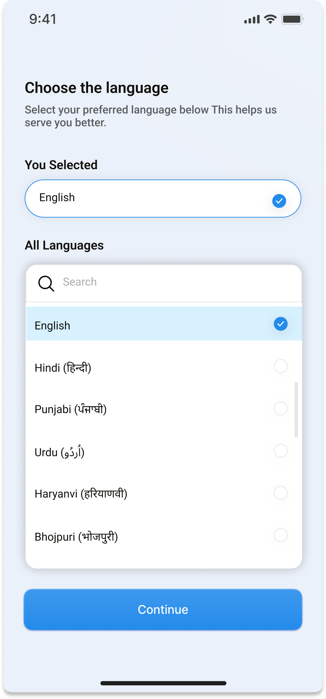
Figure 5.1.3: Language Selection Screen - Allows users to select their preferred language for the application interface.
The language selection screen enables users to choose their preferred language, supporting the platform's multilingual capabilities. This feature is crucial for reaching diverse populations and ensuring accessibility for non-English speakers. The interface displays available language options with appropriate flags or indicators.
5.2 User Dashboard
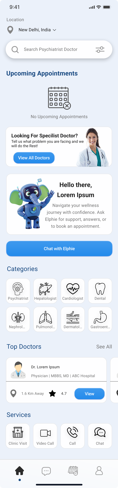
Figure 5.2.1: Home Screen - The main dashboard providing quick access to key features and services within the Clinico app.
The home screen serves as the central hub of the Clinico application, offering users quick access to essential features. The interface includes navigation options for searching doctors, accessing AI health assistance, viewing appointments, and managing health records. The design is organized with clear sections and intuitive icons to guide users efficiently.
Figure 5.2.2: Web Dashboard - The professional dashboard for healthcare providers, displaying key metrics and patient information.
The web dashboard is designed specifically for healthcare professionals, providing an overview of their appointments, patient interactions, and key performance metrics. The interface includes appointment scheduling, patient messaging, and quick access to patient records. The design prioritizes efficiency and information accessibility for busy healthcare providers.
5.3 Appointment Management Pages
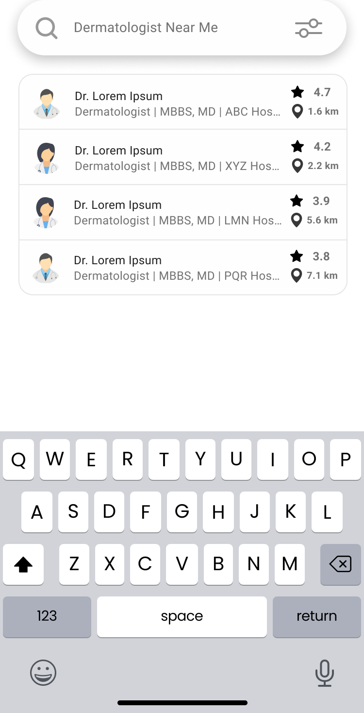
Figure 5.3.1: Doctor Search Interface - Enables users to search for healthcare professionals based on specialty, location, and other criteria.
The doctor search interface allows patients to find healthcare professionals based on various criteria including specialty, location, availability, and ratings. The interface includes filtering options and search functionality to help users quickly find the most appropriate healthcare provider for their needs. Results are displayed with relevant information such as qualifications, ratings, and availability.
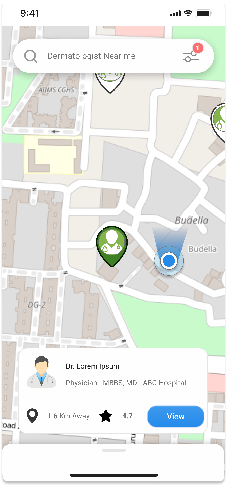
Figure 5.3.2: Local Map Search - Interactive map interface for finding nearby healthcare providers and facilities.
The local map search feature provides an interactive map interface for finding healthcare providers in the user's vicinity. The map displays clinic locations, doctor offices, and other healthcare facilities with relevant information. Users can filter results by specialty, distance, and availability, making it easy to find nearby healthcare options.
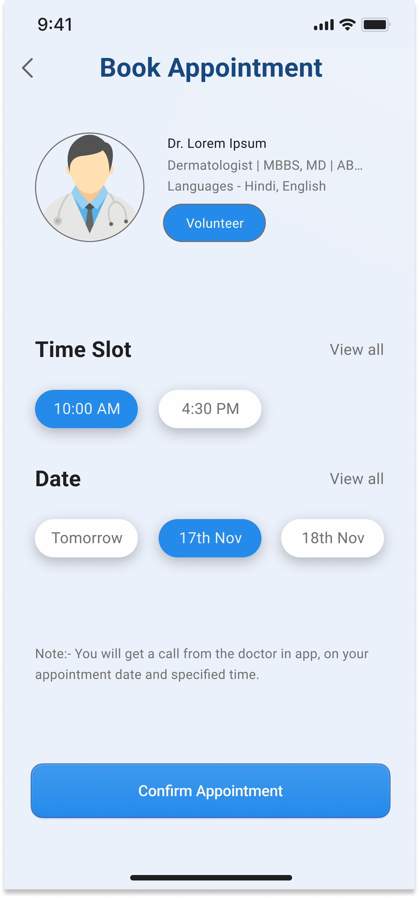
Figure 5.3.3: Doctor Booking Interface - Allows users to schedule appointments with healthcare professionals based on their availability.
The doctor booking interface enables users to schedule appointments with healthcare professionals based on their availability. The calendar view displays available time slots, and users can select their preferred time for consultation. The interface includes options for virtual or in-person appointments and provides confirmation details upon booking.
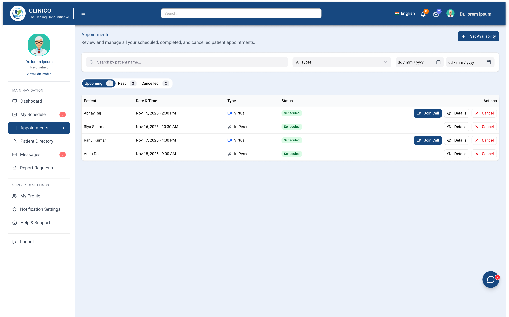
Figure 5.3.4: Appointments List - Web interface showing scheduled appointments for healthcare professionals.
The appointments list interface provides healthcare professionals with a comprehensive view of their scheduled appointments. The interface includes patient information, appointment times, and consultation status. Healthcare providers can manage their schedules, update appointment details, and access patient information directly from this screen.
5.4 Health Records Page
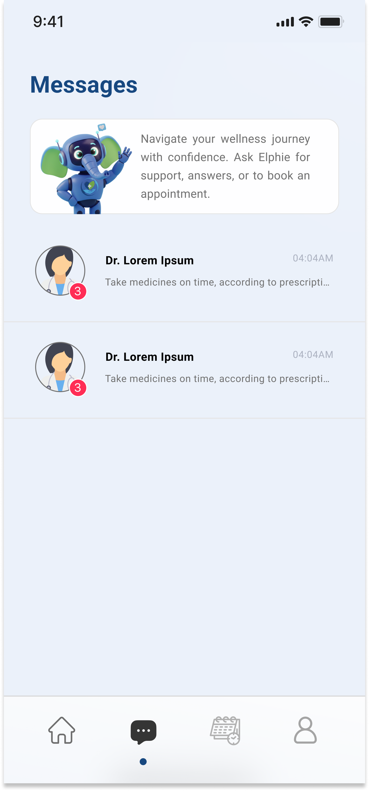
Figure 5.4.1: Messaging Interface - Secure communication platform for patients and healthcare professionals.
The messaging interface provides a secure communication platform for patients and healthcare professionals. The interface supports text messages, file sharing, and multimedia content sharing. All communications are encrypted to ensure patient privacy and compliance with healthcare regulations. The interface includes message history, read receipts, and notification management.
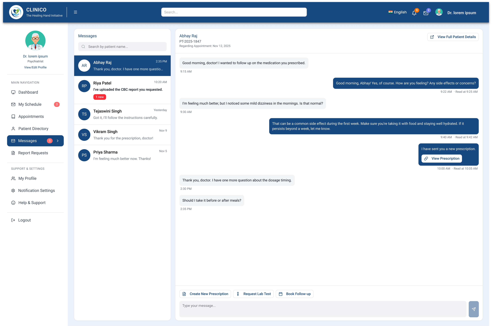
Figure 5.4.2: Web Messaging Interface - Professional messaging system for healthcare providers to communicate with patients.
The web messaging interface is designed specifically for healthcare professionals, providing tools for efficient patient communication. The interface includes message templates, quick response options, and integration with patient records. Healthcare providers can manage multiple patient conversations simultaneously while maintaining organized communication history.
5.5 Professional Dashboard
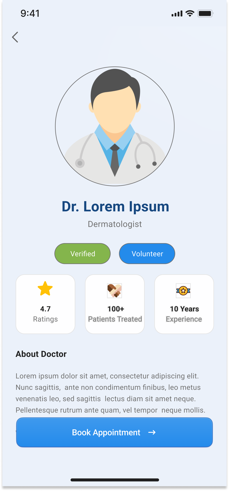
Figure 5.1: Doctor Profile - Detailed information about healthcare professionals including qualifications, ratings, and availability.
The doctor profile screen displays comprehensive information about healthcare professionals, including their qualifications, specialty, years of experience, patient ratings, and availability. The interface also shows the doctor's location, consultation fees, and languages spoken. Patients can review this information to make informed decisions about their healthcare provider.
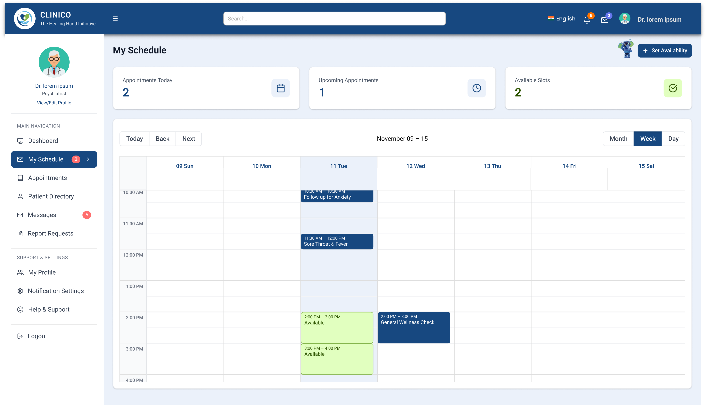
Figure 5.5.2: Doctor Schedule Management - Interface for healthcare professionals to manage their availability and appointment slots.
The schedule management interface allows healthcare professionals to set and manage their availability for appointments. The calendar-based interface supports recurring schedules, time slot configuration, and vacation management. Healthcare providers can block specific times, set consultation durations, and manage their appointment capacity efficiently.
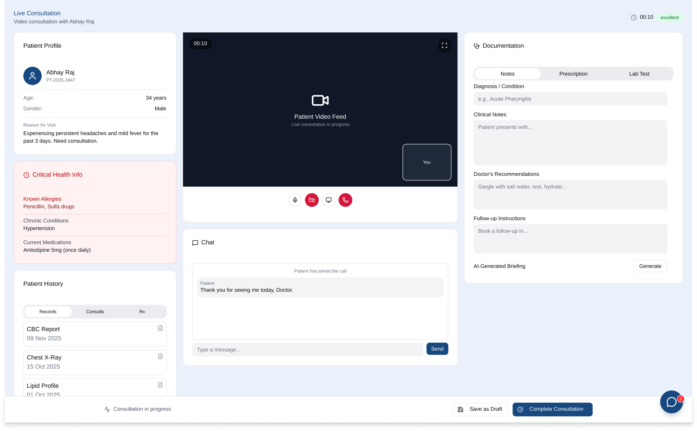
Figure 5.5.3: Live Consultation Interface - Web-based video consultation platform for healthcare professionals.
The live consultation interface provides healthcare professionals with a comprehensive video consultation platform. The interface includes video and audio controls, screen sharing capabilities, digital whiteboard for explanations, and integration with patient records. Healthcare providers can take notes during the consultation and generate prescriptions directly from this interface.
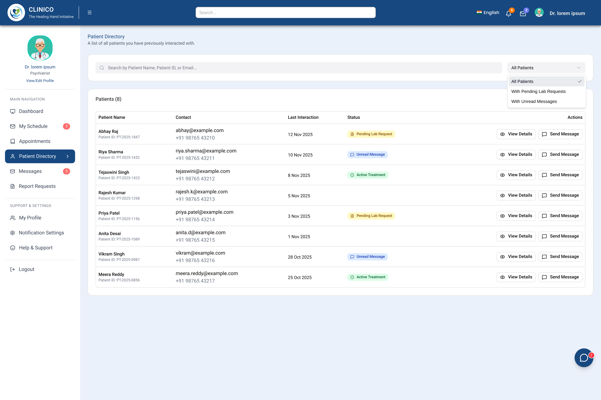
Figure 5.5.4: Patient Consultation Details - Professional interface for viewing and managing patient consultation information.
The patient consultation interface provides healthcare professionals with detailed information about patient consultations, including medical history, previous consultations, current symptoms, and treatment plans. The interface supports note-taking, prescription generation, and follow-up scheduling. Healthcare providers can access comprehensive patient information to make informed treatment decisions.
Figure 5.5: Live Video Consultation - Mobile interface for patients during video consultations with healthcare professionals.
The live video consultation interface provides patients with a seamless video consultation experience on mobile devices. The interface includes video and audio controls, connection quality indicators, and options for sharing health information during the consultation. The design ensures clear communication between patients and healthcare professionals while maintaining privacy and security.
5.6 AI Health Assistant Interface
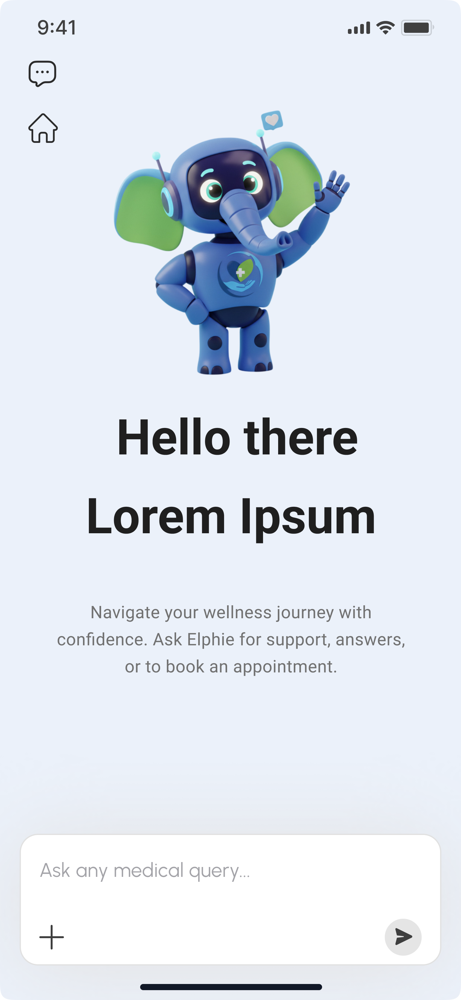
Figure 5.6.1: AI Health Assistant Chat Interface - Initial screen for interacting with the AI health assistant.
The AI health assistant interface provides patients with 24/7 access to health information and guidance. The chat interface allows users to ask health-related questions and receive responses based on verified medical information. The AI assistant can provide preliminary health assessments, symptom analysis, and guidance on when to seek professional medical attention.
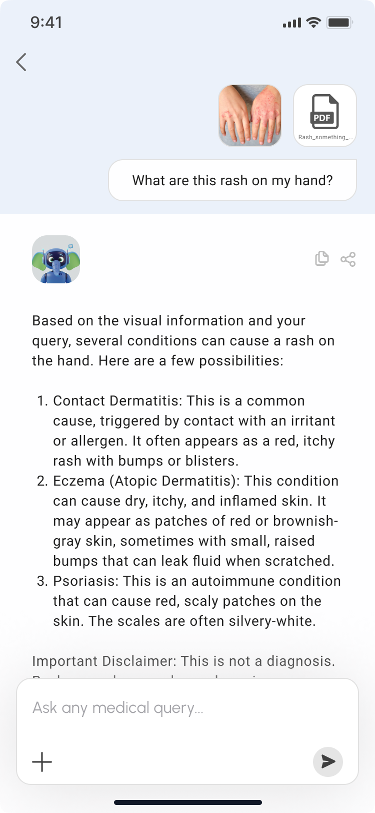
Figure 5.6.2: AI Chat Response Interface - Display of AI-generated health information and recommendations.
The AI chat response interface displays the AI assistant's responses to user queries, including health information, recommendations, and guidance. The interface clearly indicates that the information is AI-generated and includes disclaimers about the limitations of AI health advice. The responses are based on verified medical knowledge and include appropriate citations when possible.